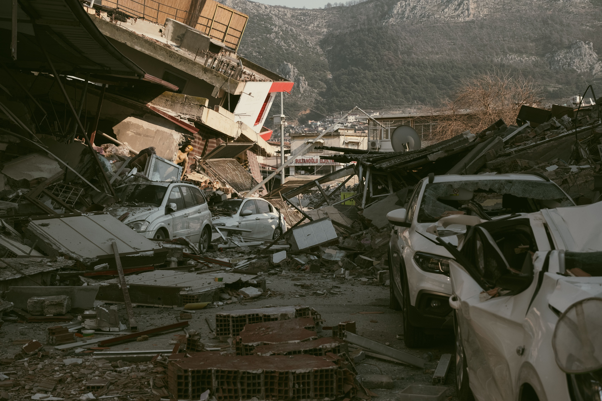
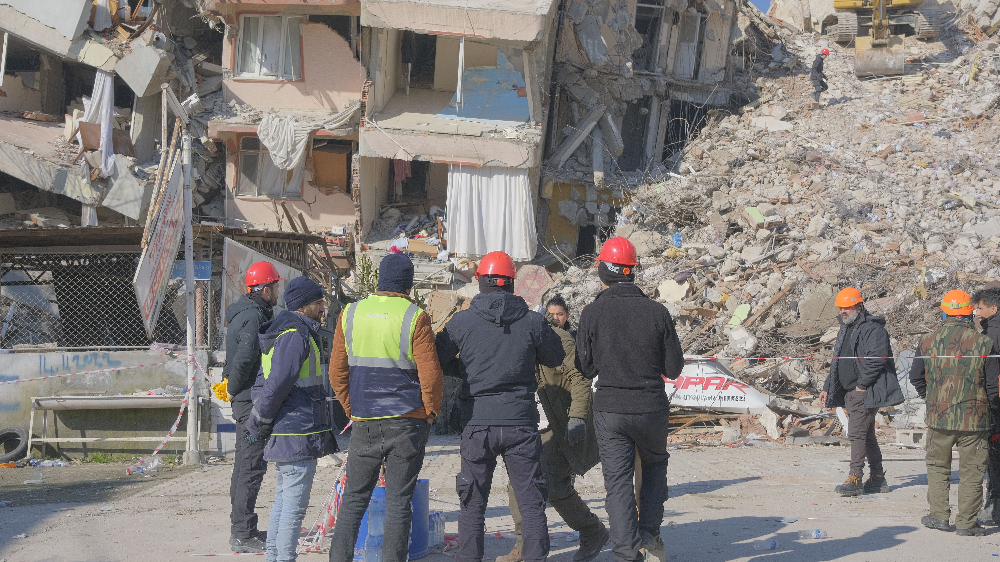

01
Sebelum Gempa
Siapkan tas siaga, amankan furnitur, dan kenali jalur evakuasi di rumah serta tempat kerja.
Edukasi Mitigasi Bencana
Pelajari langkah praktis sebelum, saat, dan setelah gempa bumi. Informasi singkat, jelas, dan mudah diterapkan di rumah maupun sekolah.

Edukasi
Gempa dapat terjadi tanpa peringatan. Dengan pemahaman dasar dan latihan rutin, risiko cedera serta kepanikan dapat dikurangi.
Siapkan tas siaga, amankan furnitur, dan kenali jalur evakuasi di rumah serta tempat kerja.
Lakukan Drop, Cover, and Hold On. Hindari berlari keluar saat guncangan masih berlangsung.
Periksa kondisi diri dan orang sekitar, waspadai gempa susulan, dan ikuti informasi resmi.
Panduan
Fokus pada tindakan sederhana agar seluruh anggota keluarga memiliki respons yang sama.
Jatuhkan badan, lindungi kepala dan leher, lalu bertahan sampai guncangan berhenti.
Siapkan air, makanan tahan lama, senter, obat-obatan, dokumen penting, dan peluit.
Tentukan titik kumpul, nomor kontak darurat, dan peran masing-masing anggota keluarga.
Data singkat
Ringkasan kejadian gempa sepanjang tahun 2025 menurut data BMKG. Angka ini mengingatkan pentingnya kesiapsiagaan di wilayah rawan.
43.439
Total gempa tercatat di Indonesia sepanjang 2025.
973
Gempa yang dapat dirasakan masyarakat.
25
Kejadian yang menimbulkan kerusakan bangunan/fasilitas.
2
Meninggal dunia akibat gempa, termasuk gempa Poso M5,8.
Sumber: BMKG (rekapitulasi 2025). Badan Geologi juga mencatat 41 gempa merusak dengan definisi dampak yang lebih luas.
Video edukasi
Cuplikan edukasi dari kanal resmi terkait kesiapsiagaan gempa. Sumber: BMKG dan materi publik kebencanaan.
Penjelasan visual langkah menghadapi gempa. Sumber: HUMAS BNPB.
Apa yang harus dilakukan saat terjadi gempa dan tsunami?
Panduan keselamatan saat terjadi gempa bumi untuk masyarakat umum.
Ingin materi lengkap? Lihat edukasi BMKG atau kunjungi kanal resmi BNPB / BPBD daerah Anda.
Tentang
Siaga Gempa adalah media edukasi mitigasi bencana gempa bumi untuk pelajar, keluarga, dan komunitas. Tujuannya menyajikan panduan singkat yang mudah dipahami dan siap dipraktikkan.
Materi disusun agar selaras dengan semangat SDG 11 (kota & komunitas berkelanjutan) dan SDG 13 (aksi iklim serta ketahanan terhadap bencana).
Selengkapnya